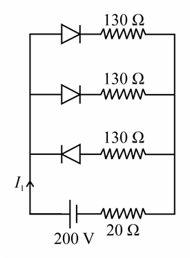
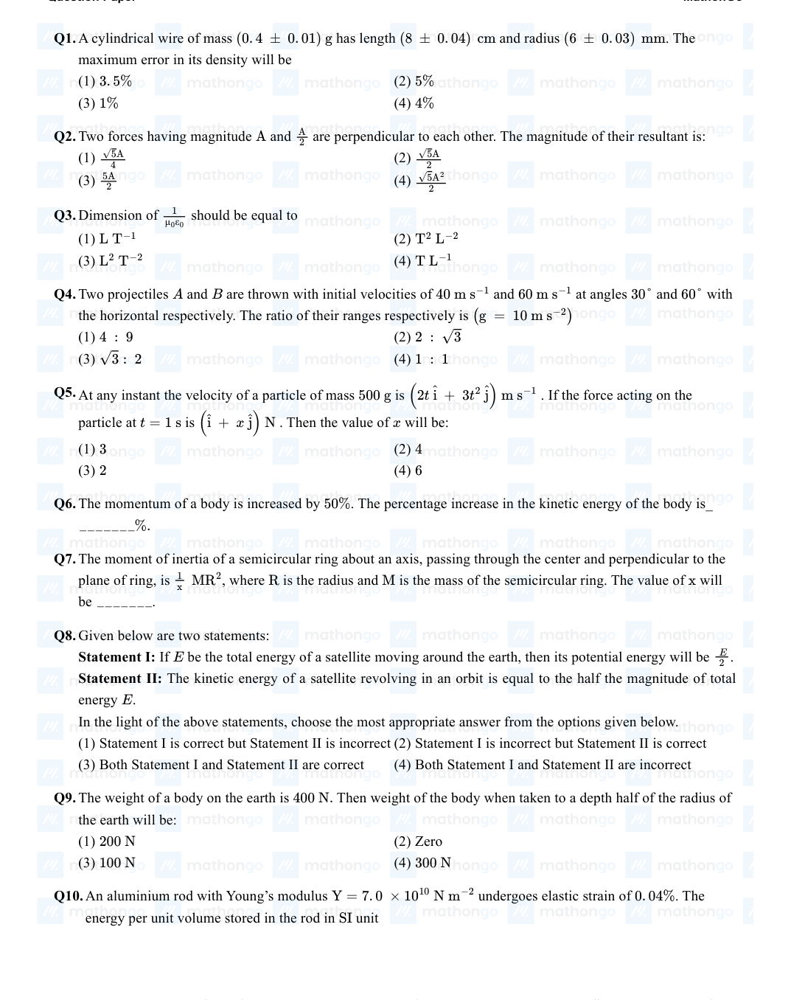

Filter questions
Q1
PHY-2021-0101-S2-Q024
2021 | 01 Sep | Shift 2
—
Integer
A 2 kg steel rod of length 0.6 m is clamped on a table vertically at its lower end and is free to rotate in the vertical plane. The upper end is pushed so that the rod falls under gravity. Ignoring the friction due to clamping at its lower end, the speed of the free end of the rod when it passes through its lowest position is _______m s−1. (Take g= 10 m s−2 )
Answer: 6
Q2
PHY-2021-0101-S1-Q005
2021 | 16 Mar | Shift 1
—
MCQ
Four equal masses, m each are placed at the corners of a square of length (l) as shown in the figure. The moment of inertia of the system about an axis passing through A and parallel to DB would be:
Answer: C
Q3
PHY-2021-0101-S1-Q005
2021 | 17 Mar | Shift 1
—
MCQ
A mass M hangs on a massless rod of length l which rotates at a constant angular frequency. The mass M moves with steady speed in a circular path of constant radius. Assume that the system is in steady circular motion with constant angular velocity ω. The angular momentum of M about point A is LA which lies in the positive z direction and the angular momentum of M about B is LB. The correct statement for this system is:
Answer: D
Q4
PHY-2021-0101-S1-Q004
2021 | 18 Mar | Shift 1
—
MCQ
A thin circular ring of mass M and radius r is rotating about its axis with an angular speed ω. Two particles having mass m each are now attached at diametrically opposite points. The angular speed of the ring will become:
Answer: C
Q5
PHY-2021-0101-S2-Q002
2021 | 18 Mar | Shift 2
—
MCQ
If the angular velocity of earth's spin is increased such that the bodies at the equator start floating, the duration of the day would be approximately: (Take: g = 10 ms−2, the radius of earth, R = 6400 × 103 m, Take π = 3.14 )
Answer: Option Question
Q6
PHY-2021-0101-S2-Q005
2021 | 18 Mar | Shift 2
—
MCQ
Consider a uniform wire of mass M and length L. It is bent into a semicircle. Its moment of inertia about a line perpendicular to the plane of the wire passing through the centre is:
Answer: C
Q7
PHY-2021-0101-S2-Q022
2021 | 20 Jul | Shift 2
—
Integer
Two bodies, a ring and a solid cylinder of same material are rolling down without slipping an inclined plane. The radii of the bodies are same. The ratio of velocity of the centre of mass at the bottom of the inclined plane of the ring to that of the cylinder is √x. Then, the value of x is 2

Answer: 3
Q8
PHY-2021-0101-S2-Q023
2021 | 20 Jul | Shift 2
—
Integer
A body rotating with an angular speed of is uniformly accelerated to in The 600 rpm 1800 rpm 10 sec. number of rotations made in the process is
Answer: 200
Q9
PHY-2021-0101-S1-Q005
2021 | 22 Jul | Shift 1
—
MCQ
Consider a situation in which a ring, a solid cylinder and a solid sphere roll down on the same inclined plane without slipping. Assume that they start rolling from rest and having identical diameter. The correct statement for this situation is
Answer: A
Q10
PHY-2021-0101-S1-Q024
2021 | 22 Jul | Shift 1
—
Integer
The centre of a wheel rolling on a plane surface moves with a speed v0. A particle on the rim of the wheel at the same level as the centre will be moving at a speed Then the value of is √xv0. x.
Answer: 2
Q11
PHY-2021-0101-S1-Q003
2021 | 24 Feb | Shift 1
—
MCQ
Moment of inertia M. I. of four bodies, having same mass and radius, are reported as; I1 = M. I. of thin circular ring about its diameter, I2 = M. I. of circular disc about an axis perpendicular to disc and going through the centre, I3 = M. I. of solid cylinder about its axis and I4 = M. I. of solid sphere about its diameter. Then:
Answer: C
Q12
PHY-2021-0101-S2-Q003
2021 | 24 Feb | Shift 2
—
MCQ
A circular hole of radius ( a 2 ) is cut out of a circular disc of radius a as shown in figure. The centroid of the remaining circular portion with respect to point O will be:
Answer: B
Q13
PHY-2021-0101-S2-Q022
2021 | 24 Feb | Shift 2
—
Integer
A uniform thin bar of mass 6 kg and length 2.4 meter is bent to make an equilateral hexagon. The moment of inertia about an axis passing through the centre of mass and perpendicular to the plane of hexagon is ___________ ×10−1 kg m2.
Answer: 8
Q14
PHY-2021-0101-S2-Q022
2021 | 25 Jul | Shift 2
—
Integer
A solid disc of radius and mass is rotating with an angular velocity of, about an axis 20 cm 10 kg 600 rpm normal to its circular plane and passing through its centre of mass. The retarding torque required to bring the disc at rest in 10 s is _________ π × 10−1 N m
Answer: 4
Q15
PHY-2021-0101-S1-Q023
2021 | 26 Aug | Shift 1
—
Integer
Consider a badminton racket with length scales as shown in the figure. If the mass of the linear and circular portions of the badminton racket are same ( M ) and the mass of the threads are negligible, the moment of inertia of the racket about an axis perpendicular to the handle and in the plane of the ring at, r distance from the end A of the handle will be ______ Mr2.2
Answer: 52
Q16
PHY-2021-0101-S2-Q006
2021 | 26 Aug | Shift 2
—
MCQ
The solid cylinder of length 80 cm and mass M has a radius of 20 cm. Calculate the density of the material m2 used if the moment of inertia of the cylinder about an axis CD parallel to AB as shown in figure is 2.7 kg.
Answer: A
Q17
PHY-2021-0101-S1-Q005
2021 | 26 Feb | Shift 1
—
MCQ
Four identical solid spheres each of mass m and radius a are placed with their centres on the four corners of a square of side b. The moment of inertia of the system about one side of square where the axis of rotation is parallel to the plane of the square is:
Answer: C
Q18
PHY-2021-0101-S2-Q007
2021 | 26 Feb | Shift 2
—
MCQ
A cord is wound round the circumference of wheel of radius r, The axis of the wheel is horizontal and the moment of inertia about it is. A weight is attached to the cord at the end. The weight falls from rest. After I mg falling through a distance h, the square of angular velocity of wheel will be
Answer: A
Q19
PHY-2021-0101-S1-Q005
2021 | 27 Aug | Shift 1
—
MCQ
Moment of inertia of a square plate of side l about the axis passing through one of the corner and perpendicular to the plane of square plate is given by: Ml2
Answer: B
Q20
PHY-2021-0101-S1-Q005
2021 | 27 Jul | Shift 1
—
MCQ
The figure shows two solid discs with radius R and r respectively. If mass per unit area is the same for both, what is the ratio of MI of bigger disc around axis AB (Which is ⊥ to the plane of the disc and passing through its centre) of MI of smaller disc around one of its diameters lying on its plane? Given M is the mass of the larger disc. ( stands for a moment of inertia) MI
Answer: D
Q21
PHY-2021-0101-S1-Q023
2021 | 27 Jul | Shift 1
—
Integer
In a uniform magnetic field, the magnetic needle has a magnetic moment 9.85 × 10−2 A m−2 and moment of inertia 5 × 10−6 kg m2. If it performs 10 complete oscillations in 5 seconds then the magnitude of the π2 magnetic field is ____ mT [Take as 9.85]
Answer: 8
Q22
PHY-2021-0101-S2-Q005
2021 | 31 Aug | Shift 2
—
MCQ
A system consists of two identical spheres each of mass 1.5 kg and radius 50 cm at the ends of a light rod. The distance between the centres of the two spheres is 5 m. What will be the moment of inertia of the system about an axis perpendicular to the rod passing through its midpoint?
Answer: C
Q23
PHY-2022-0101-S2-Q003
2022 | 25 Jun | Shift 2
—
MCQ
A disc with a flat small bottom beaker placed on it at a distance R from its center is revolving about an axis passing through the center and perpendicular to its plane with an angular velocity ω. The coefficient of static friction between the bottom of the beaker and the surface of the disc is μ. The beaker will revolve with the disc if: R≤μg R≤μg
Answer: B
Q24
PHY-2022-0101-S2-Q024
2022 | 25 Jun | Shift 2
—
Integer
Moment of Inertia (M.I.) of four bodies having same mass M and radius 2R are as follows I1 = M.I. of solid sphere about its diameter I2 = M.I. of solid cylinder about its axis I3 = M.I. of solid circular disc about its diameter I4 = M.I. of thin circular ring about its diameter If 2I2 + I3 + I4 = xI1 then the value of x will be _____.
Answer: 5
Q25
PHY-2022-0101-S1-Q005
2022 | 26 Jun | Shift 1
—
MCQ
A thin circular ring of mass M and radius R is rotating with a constant angular velocity 2 rad s−1 in a horizontal plane about an axis vertical to its plane and passing through the center of the ring. If two objects each of mass m be attached gently to the opposite ends of a diameter of ring, the ring will then rotate with an angular velocity (in s−1 ). rad
Answer: C
Q26
PHY-2022-0101-S2-Q016
2022 | 26 Jun | Shift 2
—
MCQ
A metallic conductor of length 1 m rotates in a vertical plane parallel to east-west direction about one of its end with angular velocity 5 rad s−1. If the horizontal component of earth's magnetic field is 0.2 × 10−4 T, then emf induced between the two ends of the conductor is
Answer: B
Q27
PHY-2022-0101-S2-Q028
2022 | 27 Jun | Shift 2
—
Integer
A metallic rod of length 20 cm is placed in North-South direction and is moved at a constant speed of 10−3 20 m s−1 towards East. The horizontal component of the Earth's magnetic field at that place is 4 × T and the angle of dip is 45°. The emf induced in the rod is _____ mV.
Answer: 16
Q28
PHY-2022-0101-S1-Q004
2022 | 28 Jun | Shift 1
—
MCQ
Match List-I with List-II List-I List-II Moment of inertia of solid sphere
Answer: A
Q29
PHY-2022-0101-S2-Q021
2022 | 29 Jun | Shift 2
—
Integer
The moment of inertia of a uniform thin rod about a perpendicular axis passing through one end is I1. The xπ2 same rod is bent into a ring and its moment of inertia about a diameter is I2. If I2 I1 is 3, then the value of x will be ______.

Answer: 8
Q30
PHY-2023-0101-S1-Q013
2023 | 06 Apr | Shift 1
—
MCQ
The induced emf can be produced in a coil by A. moving the coil with uniform speed inside uniform magnetic field B. moving the coil with non uniform speed inside uniform magnetic field C. rotating the coil inside the uniform magnetic field D. changing the area of the coil inside the uniform magnetic field Choose the correct answer from the options given below:
Answer: C
Q31
PHY-2023-0101-S1-Q023
2023 | 06 Apr | Shift 1
—
Integer
Two identical solid spheres each of mass 2 kg and radii 10 cm are fixed at the ends of a light rod. The separation between the centres of the spheres is 40 cm. The moment of inertia of the system about an axis perpendicular to the rod passing through its middle point is______ – 3 m2 × 10 kg.
Answer: 176
Q32
PHY-2023-0101-S2-Q006
2023 | 06 Apr | Shift 2
—
MCQ
A ring and a solid sphere rotating about an axis passing through their centres have same radii of gyration. The axis of rotation is perpendicular to plane of ring. The ratio of radius of ring to that of sphere is √2. The value x of x is _____.

Answer: C
Q33
PHY-2023-0101-S1-Q007
2023 | 08 Apr | Shift 1
—
MCQ
The moment of inertia of a semicircular ring about an axis, passing through the center and perpendicular to the 1 MR2 plane of ring, is x, where R is the radius and M is the mass of the semicircular ring. The value of x will be _______.

Answer: A
Q34
PHY-2023-0101-S2-Q021
2023 | 08 Apr | Shift 2
—
Integer
An emf of 0.08 V is induced in a metal rod of length 10 cm held normal to a uniform magnetic field of 0.4 T, when move with a velocity of: (1) 0.5 m s−1 (2) 20 m s−1 (3) 3.2 m s−1 (4) 2 m s−1
Answer: 30
Q35
PHY-2023-0101-S1-Q003
2023 | 11 Apr | Shift 1
—
MCQ
A coin placed on a rotating table just slips when it is placed at a distance of 1 cm from the centre. If the angular velocity of the table is halved, it will just slip when placed at a distance of _____ from the centre:
Answer: B
Q36
PHY-2023-0101-S1-Q023
2023 | 11 Apr | Shift 1
—
Integer
A solid sphere of mass 500 g radius 5 cm is rotated about one of its diameter with angular speed of s−1. If the moment of inertia of the sphere about its tangent is 10−2 times its angular momentum 10 rad x× about the diameter. Then the value of x will be
Answer: 35
Q37
PHY-2023-0101-S2-Q007
2023 | 11 Apr | Shift 2
—
MCQ
A circular plate is rotating in horizontal plane, about an axis passing through its centre and perpendicular to the plate, with an angular velocity ω. A person sits at the centre having two dumbbells in his hands. When he stretched out his hands, the moment of inertia of the system becomes triple. If E be the initial Kinetic energy of the system, then final Kinetic energy will be E. The value of x is x 104

Answer: C
Q38
PHY-2023-0101-S1-Q002
2023 | 12 Apr | Shift 1
—
MCQ
Match List I with List II List-I List-II A Spring constant I [T –1] B Angular speed II [MT –2] C Angular momentum III [ML2] [ML2T –1] D Moment of Inertia IV Choose the correct answer from the options given below:
Answer: C
Q39
PHY-2023-0101-S1-Q002
2023 | 13 Apr | Shift 1
—
MCQ
A disc is rolling without slipping on a surface. The radius of the disc is R. At t = 0, the top most point on the disc is A as shown in figure. When the disc completes half of its rotation, the displacement of point A from its initial position is
Answer: B
Q40
PHY-2023-0101-S1-Q007
2023 | 13 Apr | Shift 1
—
MCQ
A solid sphere is rolling on a horizontal plane without slipping. If the ratio of angular momentum about axis of rotation of the sphere to the total energy of moving sphere is π: 22 then, the value of its angular speed will be _________rad s−1.
Answer: B
Q41
PHY-2023-0101-S1-Q022
2023 | 15 Apr | Shift 1
—
Integer
A solid sphere and a solid cylinder of same mass and radius are rolling on a horizontal surface without slipping. The ratio of their radius of gyrations respectively (ksph: kcyl) is 2: √x. The value of x is _______.

Answer: 5
Q42
PHY-2023-0101-S1-Q023
2023 | 24 Jan | Shift 1
—
Integer
Solid sphere A is rotating about an axis PQ. If the radius of the sphere is 5 cm, then its radius of gyration about PQ will be √x cm. The value of x is _____.
Answer: 110
Q43
PHY-2023-0101-S2-Q006
2023 | 24 Jan | Shift 2
—
MCQ
A uniform solid cylinder with radius R and length L has moment of inertia I1, about the axis of cylinder. A concentric solid cylinder of radius R′ = R and length L′ = L is carved out of the original cylinder. If I2 is the 2 2 moment of inertia of the carved out portion of the cylinder then I1 = __________. I2 (Both I1 and I2 are about the axis of the cylinder)
Answer: D
Q44
PHY-2023-0101-S2-Q021
2023 | 24 Jan | Shift 2
—
Integer
A metallic rod of length L is rotated with an angular speed of ω normal to a uniform magnetic field B about an axis passing through one end of rod as shown in figure. The induced emf will be:. (1) 1 B2L2ω (2) 1 BL2ω 2 1 1 4 (3) 2 BL2ω (4) 4 B2Lω
Answer: 100
Q45
PHY-2023-0101-S1-Q007
2023 | 25 Jan | Shift 1
—
MCQ
ICM is moment of inertia of a circular disc about an axis (CM) passing through its center and perpendicular to the plane of disc. IAB is its moment of inertia about an axis AB perpendicular to plane and parallel to axis CM at a distance 2 from center, where R is the radius of the disc. The ratio of and is. The value of is 3 R IAB ICM x: 9 x ______.
Answer: B
Q46
PHY-2023-0101-S2-Q007
2023 | 25 Jan | Shift 2
—
MCQ
If a solid sphere of mass 5 kg and a disc of mass 4 kg have the same radius, then the ratio of moment of inertia of the disc about a tangent in its plane to the moment of inertia of the sphere about its tangent will be x. The 7 value of x is ______.
Answer: D
Q47
PHY-2023-0101-S1-Q007
2023 | 29 Jan | Shift 1
—
MCQ
A solid sphere of mass 2 kg is making pure rolling on a horizontal surface with kinetic energy 2240 J. The velocity of centre of mass of the sphere will be ______ m s−1.
Answer: C
Q48
PHY-2023-0101-S1-Q022
2023 | 30 Jan | Shift 1
—
Integer
A thin uniform rod of length 2 m, cross sectional area A and density d is rotated about an axis passing through the centre and perpendicular to its length with angular velocity ω. If value of ω in terms of its rotational kinetic energy is αE Ad, then the value of is ______. E √ α
Answer: 3
Q49
PHY-2023-0101-S2-Q003
2023 | 31 Jan | Shift 2
—
MCQ
A stone of mass 1 kg is tied to end of a massless string of length 1 m. If the breaking tension of the string is 400 N, then maximum linear velocity, the stone can have without breaking the string, while rotating in horizontal plane, is:
Answer: A
Q50
PHY-2023-0101-S2-Q007
2023 | 31 Jan | Shift 2
—
MCQ
Two discs of same mass and different radii are made of different materials such that their thicknesses are 1 cm and 0.5 cm respectively. The densities of materials are in the ratio 3: 5. The moment of inertia of these discs x respectively about their diameters will be in the ratio of 6. The value of x is ______.
Answer: A
Q51
PHY-2024-0101-S1-Q006
2024 | 01 Feb | Shift 1
—
MCQ
A ball of mass 0.5 kg is attached to a string of length 50 cm. The ball is rotated on a horizontal circular path about its vertical axis. The maximum tension that the string can bear is 400 N. The maximum possible value of angular velocity of the ball in rad s−1 is,:
Answer: B
Q52
PHY-2024-0101-S2-Q005
2024 | 01 Feb | Shift 2
—
MCQ
A disc of radius R and mass M is rolling horizontally without slipping with speed v. It then moves up an inclined smooth surface as shown in figure. The maximum height that the disc can go up the incline is:
Answer: C
Q53
PHY-2024-0101-S2-Q028
2024 | 04 Apr | Shift 2
—
Integer
A rod of length 60 cm rotates with a uniform angular velocity about its perpendicular bisector, in a uniform magnetic filed 0.5T. The direction of magnetic field is parallel to the axis of rotation. The potential difference between the two ends of the rod is _____V.
Answer: 0
Q54
PHY-2024-0101-S1-Q006
2024 | 05 Apr | Shift 1
—
MCQ
Ratio of radius of gyration of a hollow sphere to that of a solid cylinder of equal mass, for moment of Inertia √8/x about their diameter axis AB as shown in figure is. The value of x is:

Answer: D
Q55
PHY-2024-0101-S2-Q004
2024 | 08 Apr | Shift 2
—
MCQ
A thin circular disc of mass and radius is rotating in a horizontal plane about an axis passing through its M R centre and perpendicular to its plane with angular velocity ω. If another disc of same dimensions but of mass M/2 is placed gently on the first disc co-axially, then the new angular velocity of the system is:
Answer: C
Q56
PHY-2024-0101-S2-Q022
2024 | 08 Apr | Shift 2
—
Integer
A circular table is rotating with an angular velocity of ωrad/s about its axis (see figure). There is a smooth groove along a radial direction on the table. A steel ball is gently placed at a distance of on the groove. All 1 m the surfaces are smooth. If the radius of the table is 3 m, the radial velocity of the ball w.r.t. the table at the time ball leaves the table is x√2ωm/s, where the value of x is _____.
Answer: 2
Q57
PHY-2024-0101-S1-Q022
2024 | 09 Apr | Shift 1
—
Integer
A string is wrapped around the rim of a wheel of moment of inertia 0.40kgm2 and radius 10 cm. The wheel is free to rotate about its axis. Initially the wheel is at rest. The string is now pulled by a force of 40 N. The angular velocity of the wheel after 10 s is xrad/s, where x is _______
Answer: 100
Q58
PHY-2024-0101-S1-Q022
2024 | 27 Jan | Shift 1
—
Integer
Four particles, each of mass 1 kg are placed at four corners of a square of side 2 m. The moment of inertia of the system about an axis perpendicular to its plane and passing through one of its vertex is ______ kg m2.
Answer: 16
Q59
PHY-2024-0101-S1-Q022
2024 | 30 Jan | Shift 1
—
Integer
Consider a disc of mass 5 kg, radius 2 m, rotating with angular velocity of 10 rad s−1 about an axis perpendicular to the plane of rotation. An identical disc is kept gently over the rotating disc along the same axis. The energy dissipated so that both the discs continue to rotate together without slipping is _________ J.
Answer: 250
Q60
PHY-2024-0101-S1-Q027
2024 | 30 Jan | Shift 1
—
Integer
A ceiling fan having 3 blades of length 80 cm each is rotating with an angular velocity of 1200 rpm. The magnetic field of earth in that region is 0.5 G and angle of dip is 30°. The emf induced across the blades is Nπ × 10−5 V. The value of N is _______.
Answer: 32
Q61
PHY-2024-0101-S2-Q022
2024 | 30 Jan | Shift 2
—
Integer
Two discs of moment of inertia I1 = 4 kg m2 and I2 = 2 kg m2 about their central axes & normal to their s−1 s−1 planes, rotating with angular speeds 10 rad & 4 rad respectively are brought into contact face to face with their axe of rotation coincident. The loss in kinetic energy of the system in the process is _________J.
Answer: 24
Q62
PHY-2024-0101-S2-Q021
2024 | 31 Jan | Shift 2
—
Integer
Two identical spheres each of mass and radius are fixed at the ends of a light rod so that the 2 kg 50 cm separation between the centers is 150 cm. Then, moment of inertia of the system about an axis perpendicular to the rod and passing through its middle point is x kg m2, where the value of x is 20
Answer: 53
Q63
PHY-2025-0101-S1-Q028
2025 | 22 Jan | Shift 1
—
Integer
A uniform circular disc of radius ' R ' and mass ' M ' is rotating about an axis perpendicular to its plane and passing through its centre. A small circular part of radius R/2 is removed from the original disc as shown in the figure. Find the moment of inertia of the remaining part of the original disc about the axis as given above. (1) 7 MR2 (2) 9 MR2 32 32 (3) 17 MR2 (4) 13 MR2 32 32

Answer: 4
Q64
PHY-2025-0101-S2-Q005
2025 | 23 Jan | Shift 2
—
MCQ
A rod of length eight units moves such that its ends A and B always lie on the lines x −y + 2 = 0 and y + 2 = 0, respectively. If the locus of the point P, that divides the rod AB internally in the ratio 2: 1 is 9 (x2 + αy2 + βxy + γx + 28y) −76 = 0, then α −β −γ is equal to:
Answer: C
Q65
PHY-2025-0101-S1-Q027
2025 | 29 Jan | Shift 1
—
Integer
A coil of area A and N turns is rotating with angular velocity ω in a uniform magnetic field about an axis perpendicular to. Magnetic flux φ and induced emf ε across it, at an instant when is parallel to the plane of coil, are: (1) φ = AB, ε = 0 (2) φ = 0, ε = 0 (3) φ = 0, ε = NABω (4) φ = AB, ε = NABω
Answer: 3